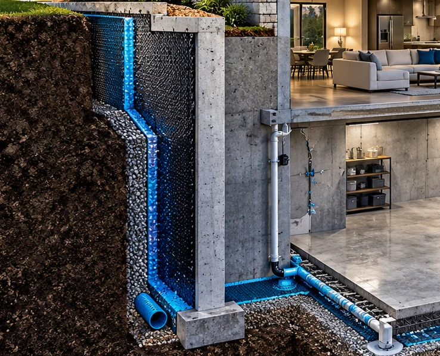
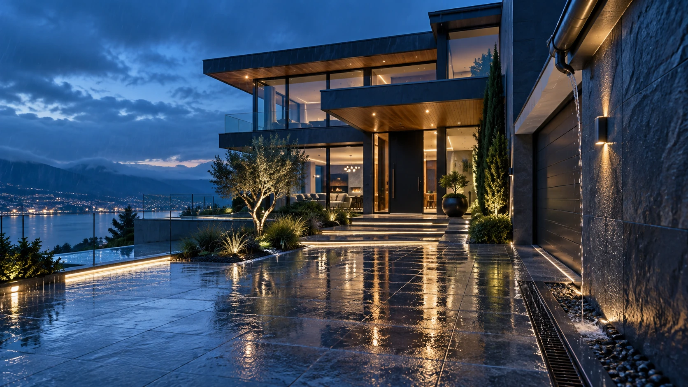
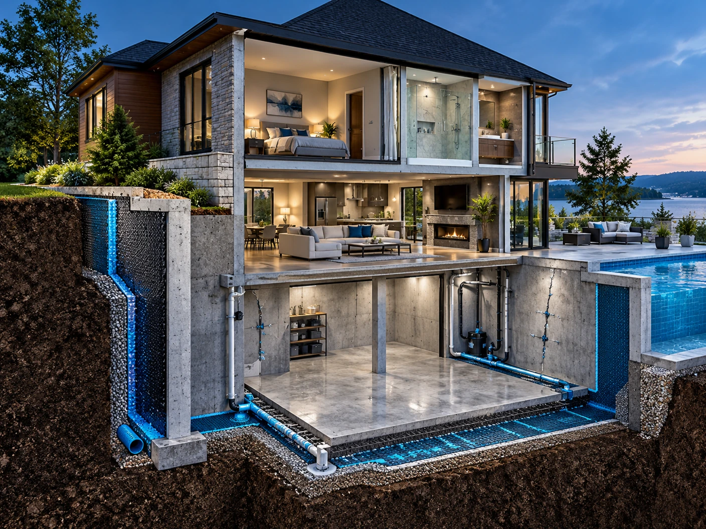
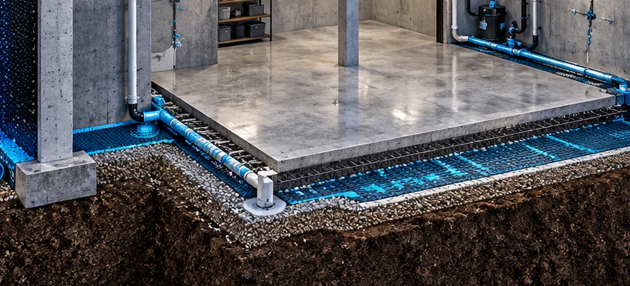
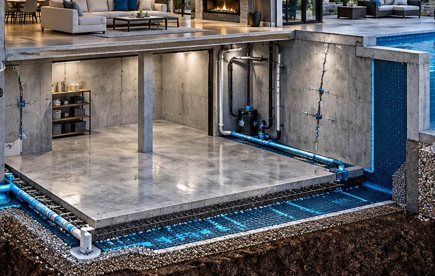
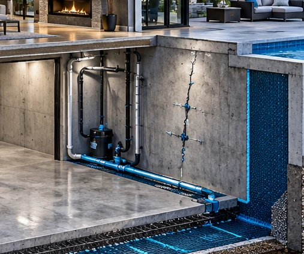
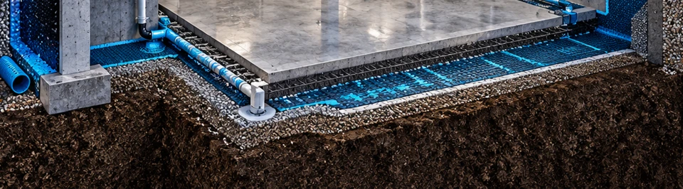

01 / Start at the sourceStart at the source
Foundation leaks
Understand where water is entering, the conditions around the wall, and the protection your space needs.


Waterproofing, from every angle
Life happens above the surface.
We help protect what’s underneath.
New York + New Jersey • Existing homes & new projects
Let’s start hereWhat brings you in?
01 A little less on your mind
The forecast. The basement corner.
The renovation you keep putting off.
Water concerns have a way of staying with you. Start with the whole property—not just the spot where water shows up. Understand the path, consider the options, and take a clearer next step.
What to notice before you call02 The protection you don’t see
Explore the hidden layers.
Choose a detail, rotate the model,
or pull the structure apart.
03 Connected solutions

01 / Start at the sourceStart at the source
Understand where water is entering, the conditions around the wall, and the protection your space needs.

02 / Give water a directionGive water a direction
Bring surface runoff, subsurface collection, and the final discharge into one clear drainage plan.

03 / Consider it earlyConsider it early
Coordinate concrete foundation protection while the plans, surfaces, and construction sequence can still be shaped.

04 / Understand the openingUnderstand the opening
Separate a water-sealing objective from a structural concern before discussing a targeted repair.

05 / Plan the hidden layersPlan the hidden layers
Bring underslab moisture protection and waterproofing wraps into the project before access becomes limited.
Protect the beautiful finish
Plan the waterproofing conversation for showers, spas, mikvahs, and pools around the actual use of the space.
From the job site
See the photographs behind the services. Explore Waterproofing360’s original project albums, organized by the work involved.
Explore all seven galleries04 The 360 perspective
Where water appears, when it happens, and what has changed.
The structure, the surrounding ground, existing drainage, and the next layer.
An assessed scope, practical questions, and a plan you can understand.
05 Built around your project
For the home you live in
Bring what you’ve noticed: the wet corner, the timing, the previous repair. You do not need to know the cause to start a useful conversation.
06 Field notes
Water in your basement after rain? Learn how to document the entry point, distinguish runoff from groundwater, and prepare for a waterproofing assessment.
Read the guideFrench drains and trench drains collect water differently. Understand surface runoff, subsurface collection, outlets, and questions to ask before installation.
Read the guideTile is the finish, not the waterproofing plan. Understand shower membranes, transitions, drains, water testing, and the questions to ask before installation.
Read the guide07 Closer to clarity
Tell us where your property is. The team will confirm coverage, availability, and the right next step.
No. Start with what you have observed, when it happens, and any previous work. The property needs assessment before a cause or repair scope can be established.
The company’s published services include existing foundation leaks, below-grade concrete foundations, underslab protection, and specialty wet areas. Bring the construction stage and current plans into the conversation.
No. It organizes your concern, project type, and location. It does not diagnose the property, calculate a price, confirm coverage, or book an appointment.
Useful starting points include photographs taken safely, a short timeline, any plans, and previous repair records. You can download a simple project brief from the guide.
Keep people away from standing water near electrical equipment, suspected sewage, or unstable structures. Use the appropriate emergency, utility, or qualified professional channel for immediate hazards. This website is not an emergency dispatch service.
Yes. Describe the intended use, construction stage, and available plans. Each type of wet area needs a suitability discussion around the actual assembly and conditions.
A clearer next step